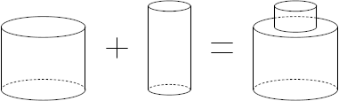
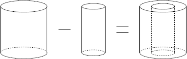

Constructive Solid Geometry (CSG)
All objects are defined through Constructive Solid Geometry (CSG), where complex geometries can be constructed by combining simple volume primitives (e.g. Tube) through Boolean operators and transformed using Transformations.
The primitives which can be used are shown under Volume Primitives together with how they can be specified in the configuration files.
Volume Primitives
using SolidStateDetectors
import SolidStateDetectors.ConstructiveSolidGeometry as CSG
using Plots
T = Float64;List of YAML example configuration files for Primitives
Under SolidStateDetectors.jl/examples/example_primitive_files there are some examples how to define the different primitives via the YAML format:
path_to_example_primitives_config_files = joinpath(dirname(dirname(pathof(SolidStateDetectors))), "examples", "example_primitive_files")
example_primitives_config_filenames = readdir(path_to_example_primitives_config_files)
for fn in example_primitives_config_filenames
println(fn)
endBox.yaml
Box_hXhYhZ.yaml
Box_halfwidths.yaml
Box_old.yaml
Cone.yaml
Cone_old.yaml
Cone_tube.yaml
Ellipsoid_full_sphere.yaml
RegularPrism_hexagon.yaml
Torus.yamlBox
cfn = joinpath(path_to_example_primitives_config_files, "Box.yaml")
print(open(f -> read(f, String), cfn))box:
widths: [2, 4, 6] # => hX = 1; hY = 2; hZ = 3;
origin: [0, 0, 0] # [x, y, z] - Optional; Default: [0, 0, 0]
rotate: # Optional; Default: no rotation
Z: 0Load the primitive from the configuration file via CSG.Geometry
box = CSG.Geometry(T, cfn)
plot(box)Cone
Tube
cfn = joinpath(path_to_example_primitives_config_files, "Cone_tube.yaml")
print(open(f -> read(f, String), cfn))tube:
r:
from: 1.0
to: 2.0
phi:
from: 0.0
to: 6.283185307179586
h: 2.0Load the primitive from the configuration file via CSG.Geometry
cone = CSG.Geometry(T, cfn)
plot(cone)VaryingTube
cfn = joinpath(path_to_example_primitives_config_files, "Cone.yaml")
print(open(f -> read(f, String), cfn))cone:
r:
bottom:
from: 1.0
to: 2.0
top:
from: 1.0
to: 4.0
phi:
from: 0.0
to: 6.283185307179586
h: 2.0
origin: [0,0,0] # optionalLoad the primitive from the configuration file via CSG.Geometry
cone = CSG.Geometry(T, cfn)
plot(cone)Ellipsoid
Sphere
cfn = joinpath(path_to_example_primitives_config_files, "Ellipsoid_full_sphere.yaml")
print(open(f -> read(f, String), cfn))sphere:
r: 2Load the primitive from the configuration file via CSG.Geometry
ellipsoid = CSG.Geometry(T, cfn)
plot(ellipsoid)Torus
cfn = joinpath(path_to_example_primitives_config_files, "Torus.yaml")
print(open(f -> read(f, String), cfn))torus:
r_torus: 10.0
r_tube: 2
phi:
from: 0.0°
to: 360.0°
theta:
from: 0.0°
to: 360.0°Load the primitive from the configuration file via CSG.Geometry
torus = CSG.Geometry(T, cfn)
plot(torus, zlims = [-6,6], camera = (40, 55))Prism
Hexagonal Prism
cfn = joinpath(path_to_example_primitives_config_files, "RegularPrism_hexagon.yaml")
print(open(f -> read(f, String), cfn))HexagonalPrism:
r: 1.0
h: 2.0Load the primitive from the configuration file via CSG.Geometry
prism = CSG.Geometry(T, cfn)
plot(prism)Boolean operators
The Boolean operators are union, difference and intersection:
Union
A union of two objects A and B is defined as the set of points that are in at least one of either A or B. In the configuration files, it is defined using the union field, followed by an array of entries to construct the union, e.g.
union: # A || B
- tube: # A
r: 2
h: 1
- tube: # B
r: 1
h: 1.5
origin:
z: 0.5
If more than two geometries are passed, the union is constructed from all of them.
Difference
A difference of two objects A and B is defined as the set of points that are in A but not in B. Note that B is treated as open primitive. This means that points which are in A and on the surface of B will still be in the difference of A and B. In the configuration files, it is defined using the difference field, followed by an array of entries. The first entry of the array is the main geometry, from which all following geometry entries are subtracted, e.g.
difference: # A && !B
- tube: # A
r: 2
h: 1
- tube: # B
r: 1
h: 1.1
Keep in mind that to discard the part of the surface of A which is on the surface of B, B should be chosen slightly bigger than A.
If more than two geometries are passed, all entries starting from the second will be subtracted from the first.
Intersection
An intersection of two objects A and B is defined as the set of points that are both in A and in B. In the configuration files, it is defined using the intersection field, followed by an array of entries to construct the intersection, e.g.
intersection: # A && B
- tube: # A
r: 2
h: 1
- tube: # B
r: 1
h: 1.5
origin:
z: 0.5
If more than two geometries are passed, the intersection is constructed from all of them.
Transformations
All Volume Primitives are defined such that they are centered around the origin of the coordinate system. They can be rotated in their local coordinate system and translated to their final position in the global coordinate system.
There are two possibilities two rotate and translate volume primitives. One is to define the rotation/translation inside the primitive definition. The other one is to define it for complete sets like detectors, unions, etc.
Rotations
Rotations are defined in the configuration files by either a 3$\times$3 rotation matrix or a set of angles with respective rotation axes are required.
If a tube is to be rotated 45° around the x axis, the rotation is parsed to the primitive as additional rotation field in the primitive definition.
tube:
r: 1
h: 1
rotation:
X: 45°In this case, the rotation around the x axis by 45° is parsed in the format seen above: the name of the axis to be rotated around is given as (upper-case) letter, followed by the rotation angle. If no units are given to the rotation angle, it will be parsed with units.angle.
If the rotation is to be described as multiple subsequent rotations, it can be passed using an array of angles with respective axis description as field name, e.g.
tube:
r: 1
h: 1
rotation:
XZ: [45°, 30°]will first rotate the tube 45° around the x axis, followed by a 30° rotation around the z axis.
Alternatively, a full 3$\times$3 matrix can be passed using the M field, e.g.
tube:
r: 1
h: 1
rotation:
M: [1, 0, 0, 0, 0, -1, 0, 1, 0]will transform the primitive using the rotation matrix
\[\left[ \begin{array}{ccc}1&0&0\\0&0&-1\\0&1&0\end{array}\right]\]
which corresponds to X: 45°.
Alternative naming for the rotation field can be rotate.
Translations
Translations are defined in the configuration files through a Cartesian vector.
If a tube is translated 1cm along the x axis, the translation is parsed to the primitive as additional origin field in the primitive definition.
tube:
r: 1
h: 1
origin:
x: 1cmThe Cartesian vector can also be passed as a vector, i.e.
tube:
r: 1
h: 1
origin: [1cm, 0, 0]If no units are given, the translation is parsed in units of units.length.
Alternative naming for the origin field can be translate and translation.
Combination of Transformations
If both a rotation and translation are defined in a primitive definition, it is first rotated and then translated.
tube:
r: 1
h: 1
rotation:
X: 45°
origin:
z: 1cmwould first rotate the tube by 45° around the x axis before translating it 1cm along the z axis.
Transforming Sets
If a union of two primitives should be transformed all together, the transformation can also be defined by nesting the union into a translate with respective information, e.g.
translate:
z: 1
union:
- tube:
r: 1
h: 1
- box:
widths: [1,1,1]Same applies for rotations or other sets, e.g.
rotate:
X: 45°
difference:
- tube:
r: 1
h: 1
- box:
widths: [1,1,1]